공장 기계 카탈로그
기계와 장치 77종 · 아이템 108종 · 블록 34종 · 시험 제작본 · 모든 모델은 스크립트로 생성

- 노란 테두리는 입구
- 청록 테두리는 출구
- 주황 발광은 열
- 파랑은 물
- 빨강은 움직이는 부품
운반 8
아이템을 옮기고, 나누고, 합치고, 골라내는 장치

직선 벨트
아이템을 한 방향으로 옮김

코너 벨트
진행 방향을 90도 꺾음 (좌·우 대칭형)

경사 벨트
두 칸에 걸쳐 한 칸 높이를 올림

분배기
들어온 아이템을 두 방향으로 번갈아 내보냄

합류기
두 줄을 한 줄로 합침

분류기
지정한 아이템만 옆으로 빼내고 나머지는 통과

보관함
아이템을 쌓아 두었다가 순서대로 내보내는 완충 창고

자석 분리기
철이 든 것만 옆으로 끌어내고 나머지는 통과시킴
물리 장치 6
떨어뜨리고, 밀고, 올리고, 쏘아 보내는 장치. 아이템이 실제로 굴러가는 게임이라 가능한 것들

깔때기
위에서 떨어지는 아이템을 받아 벨트로 내보냄. 높낮이만 맞추면 동력이 필요 없음

낙하 통로
높은 곳에서 낮은 곳으로 미끄러뜨림. 동력이 필요 없지만 내려가는 쪽으로만 감

송풍기
바람으로 아이템을 밀어냄. 가벼운 것은 멀리, 무거운 것은 조금만 밀림

수직 승강기
아이템을 두 칸 위로 올림

발사기
아이템을 포물선으로 쏘아 보냄. 벨트 없이 먼 곳이나 높은 곳으로 보낼 수 있음

밀대
신호가 오면 지나가는 아이템을 옆으로 밀어냄
판단 장치 7
신호를 만들고 조건에 따라 공장을 움직이는 장치

감지기
벨트 위를 지나가는 아이템을 보고 신호를 냄. 종류나 개수를 조건으로 걸 수 있음

여닫이 문
신호에 따라 벨트를 막거나 엶

계수기
지나간 아이템을 세고, 정한 수가 차면 신호를 냄

스위치
손으로 켜고 끄는 신호

논리 회로함
신호 둘을 받아 조건이 맞으면 신호를 내보냄 (그리고, 또는, 아니면)
신호등
신호를 받으면 켜짐. 공장 상태를 멀리서 확인

타이머
정해 둔 간격마다 신호를 냄
공급 9
아무것도 넣지 않아도 자원을 내보내거나, 밭과 나무를 돌보는 기계

빈 추출기
돌, 철 주괴, 나무, 몬스터 부품으로 조립. 광맥 핵을 꽂기 전에는 아무것도 나오지 않음

추출기 (철 광맥 핵)
꽂은 광맥 핵에 맞는 원석을 계속 내보냄

추출기 (석탄 광맥 핵)
핵만 바꿔 꽂으면 다른 원석이 나옴

벌목기
주변 나무를 베어 통나무를 내보냄

물 펌프
물을 끌어올려 물통으로 내보냄

펌프잭
유전 위에 놓으면 원유통을 내보냄

수확기
앞쪽 밭의 다 자란 작물을 거둬들임

물뿌리개
주변 밭에 물을 줘서 작물이 빨리 자람

파종기
수확이 끝난 자리에 씨앗을 다시 심음
변환 19
재료 하나를 받아 정해진 결과물로 바꾸는 기계

분쇄기
광석 → 분쇄 광석(수량 2배), 돌 → 모래

세척기
분쇄 광석 → 정제 광석 (제련 수율이 오름)

제련로
광석 → 주괴. 석탄이나 숯 같은 연료를 함께 넣어야 함

가마
모래 → 유리, 통나무 → 숯

제재기
통나무 → 판자

석재 절단기
돌 → 석재 블록

압연 프레스
주괴 → 판재

신선기
구리 주괴 → 구리선 묶음

정유탑
원유 → 연료통 + 플라스틱 (출구 둘)

제분기
밀 → 밀가루

압축기
톱밥 → 연료 덩이. 버려지던 부산물이 연료가 됨

착유기
기름 작물 → 식물 기름. 석탄도 석유도 없을 때의 연료

선반
철 막대 → 볼트, 철판 → 기어. 깎아서 모양을 냄

주조기
철 주괴 → 기계 틀. 조립보다 재료가 더 들지만 한 줄로 끝남

직조기
목화 → 천

보석 절삭기
다이아 → 절삭 날. 고급 도구와 기계 강화 부품의 재료

분해기
기계나 부품을 넣으면 들어간 재료의 일부를 되돌려 받음

도색기
블록 + 염료 → 색을 입힌 블록

체질기
자갈이나 모래를 걸러 아주 적은 양의 광물을 얻음. 광맥 핵이 없어도 됨
조합 7
재료 둘 이상을 받아 하나로 만드는 기계

고로
철 주괴 + 석탄 → 강철 주괴

조립기
판재 + 구리선 → 기계 부품

회로 제작기
구리선 + 플라스틱 → 회로 기판

혼합기
모래 + 물통 → 콘크리트

제빵 오븐
밀가루 + 물통 → 빵

제조 공장
기계 부품 + 회로 기판 + 강철 → 모터

합금로
두 가지 금속을 함께 녹여 합금 주괴로 만듦
포장·판매 2
묶어서 물체 수를 줄이고, 플레이어끼리 사고파는 장치

포장기
같은 아이템 8개 → 상자 1개 (물체 수를 줄임)

자판기
물건과 가격을 걸어 두면 다른 플레이어가 사 감. 사고 싶은 물건과 돈을 걸어 둘 수도 있음
동력 6
전력을 만들고, 모으고, 나르는 기계

석탄 발전기
석탄이나 연료통을 태워 주변 기계에 전력을 공급

소각로
필요 없는 것을 태워 없앰. 전력이 조금 나옴

풍력 터빈
바람으로 전력을 만듦. 연료가 필요 없지만 출력이 들쭉날쭉함

태양광 패널
낮 동안 전력을 만듦

축전지
남는 전력을 모아 두었다가 모자랄 때 내보냄

전신주
전선을 이어 전기를 나름. 전신주 주변 몇 칸 안의 기계가 전기를 받음
궁극의 장치 2
자동화의 자동화. 이 게임의 가장 큰 목표물

핵 제련소
막대한 재료로 광맥 핵을 만들어 냄. 흔한 핵을 합쳐 더 좋은 핵으로, 끝내는 금과 다이아의 핵까지

무한 동력로
연료 없이 전기를 끝없이 냄. 섬의 모든 기계를 최고 효율로 돌림
손 작업 11
공장이 없을 때 손으로 만드는 자리. 공장은 이 일을 대신해 줌

모닥불
가장 처음 쓰는 불. 재료와 땔감을 직접 넣고 기다림

손 화덕
돌로 쌓은 화덕. 광석과 땔감을 손으로 넣어 주괴를 만듦

기본 작업대
건축 블록, 일반 물건, 다른 작업대를 만듦

도구 작업대
곡괭이, 무기, 갑옷을 만듦

부품 작업대
판재, 막대, 기어 같은 부품을 손으로 하나씩 만듦

기계 작업대
벨트, 기계, 추출기를 만듦

조리대
음식을 만듦

전기 작업대
감지기, 스위치, 논리 회로 같은 전기 부품을 만듦

가구 작업대
가구와 꾸미기 물건을 만듦

통합 작업대
모든 분류의 물건을 한곳에서 만듦. 아주 비싼 후반 설비

상자
물건을 넣어 두는 보관함
아이템 108
손에 들거나 벨트 위를 굴러다니는 물건들. 도구부터 공장을 거친 재료까지
도구 35
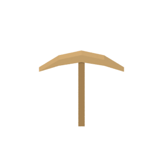
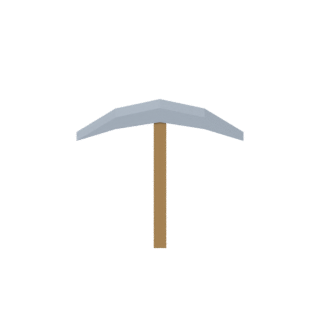
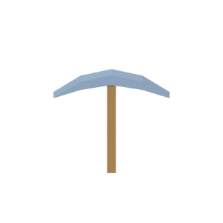
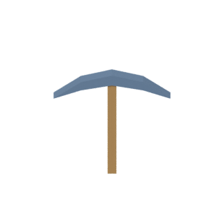
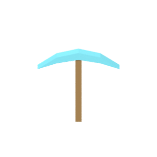
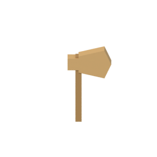
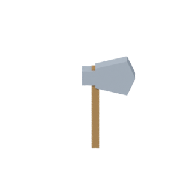
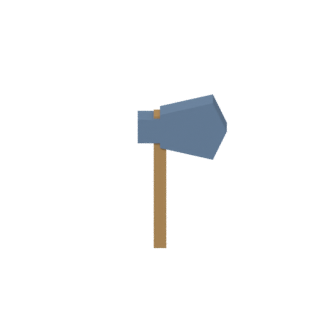
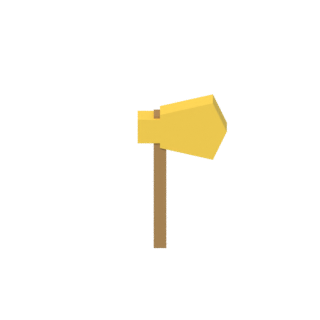
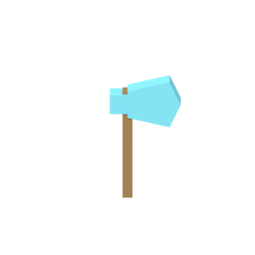
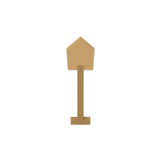
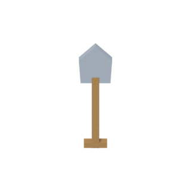
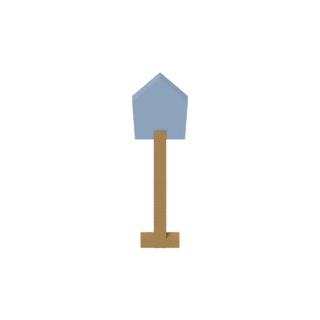
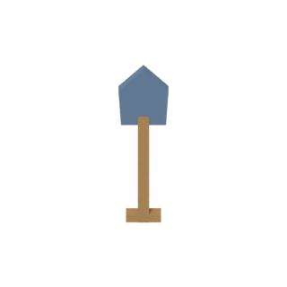
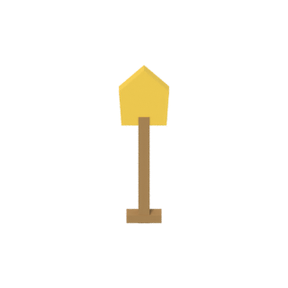
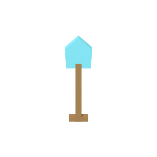
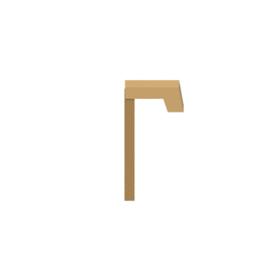
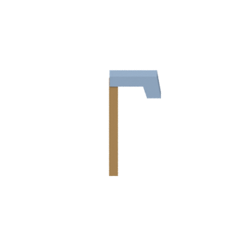
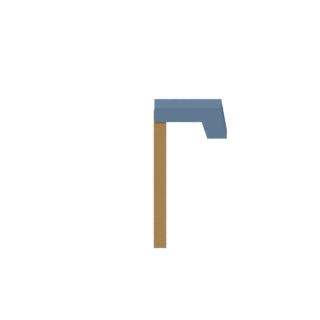
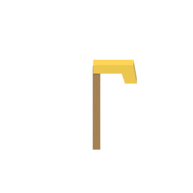
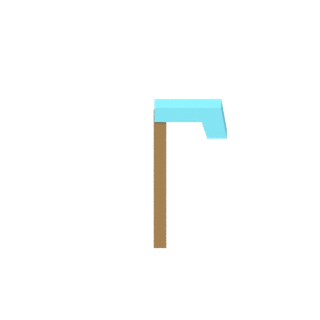
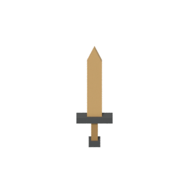
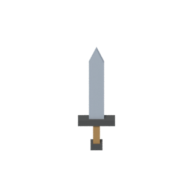
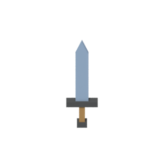
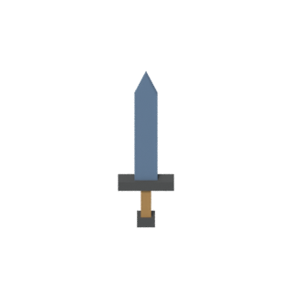
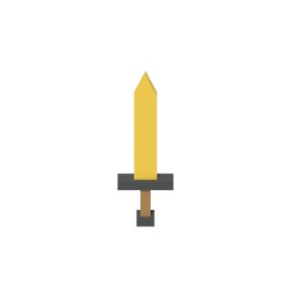
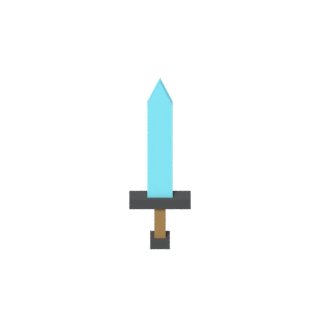
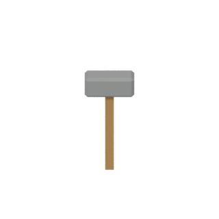
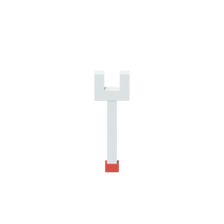
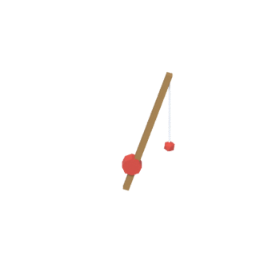
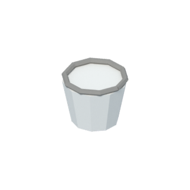
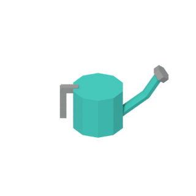
원석과 광물 11
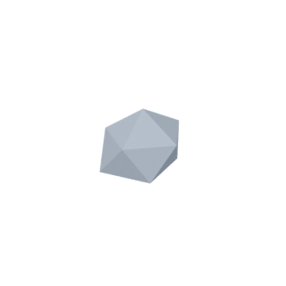
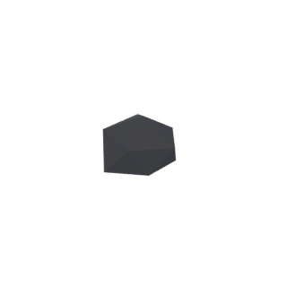
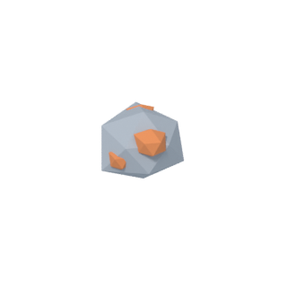
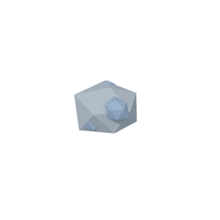
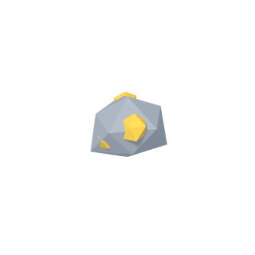
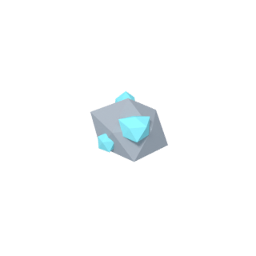
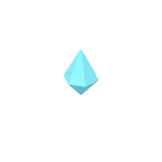
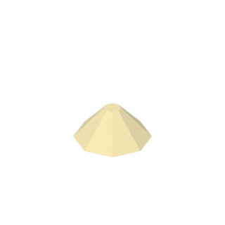
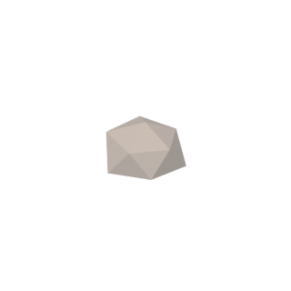
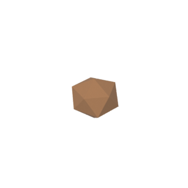
광석 가공 7
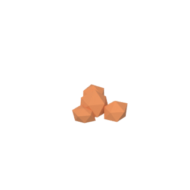
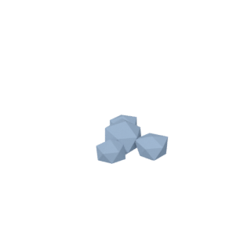
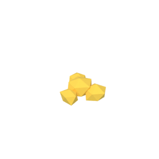
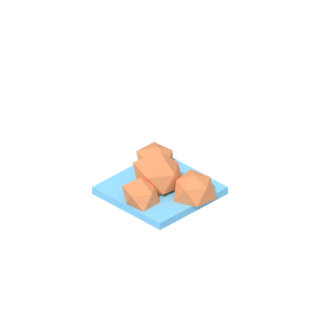
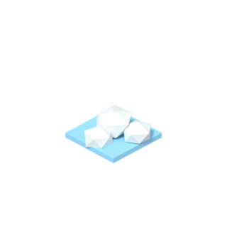
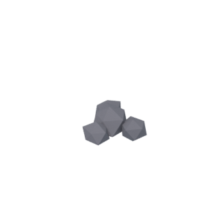
주괴 5
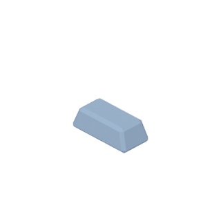
금속 부품 13
조립품 5
건축 재료 7
나무와 연료 10
농산물과 음식 8
광맥 핵 6
포장 1
블록 34
섬을 이루는 정육면체 블록. 스타일은 아직 확정하지 않은 시험 제작본